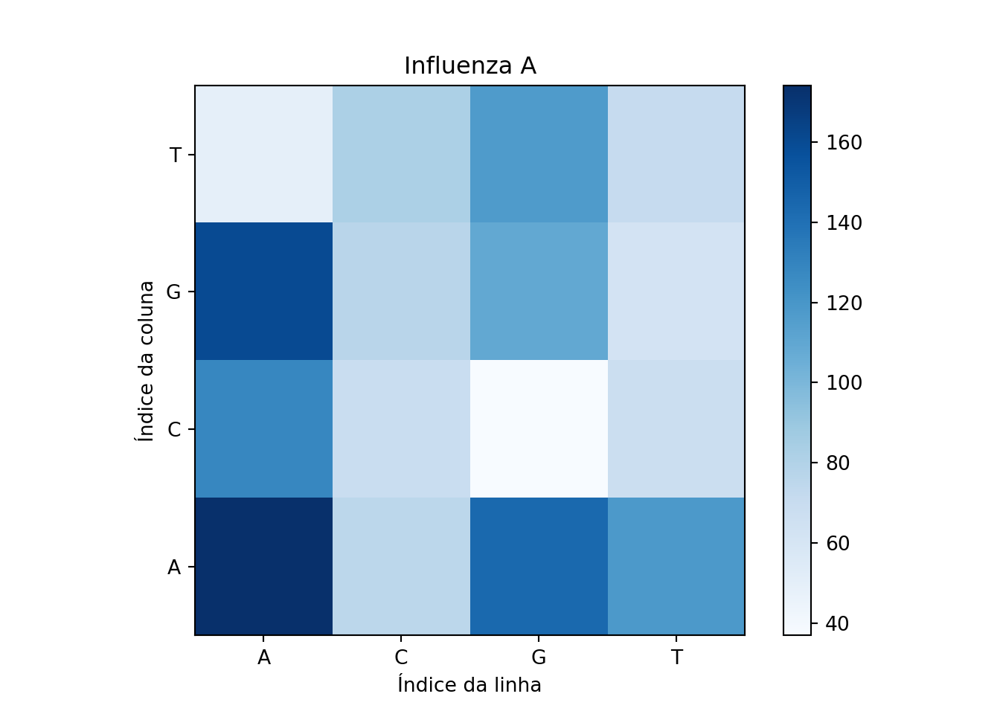
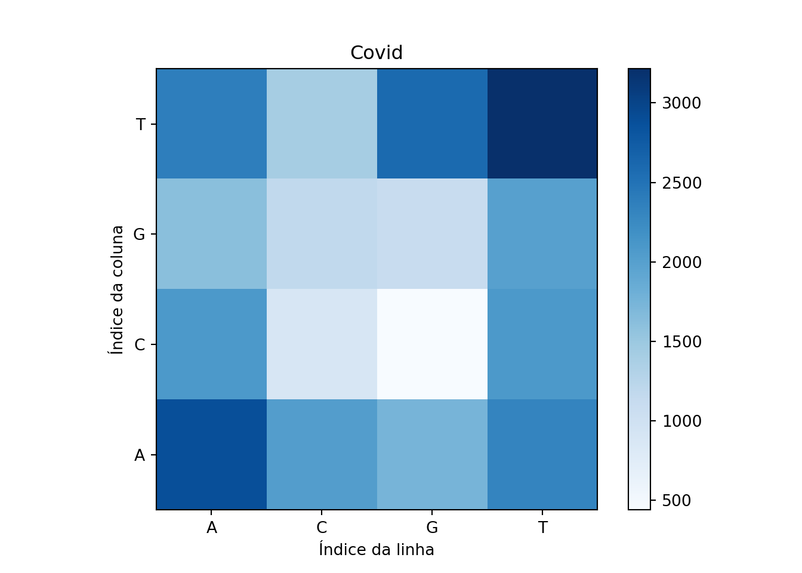

library(reticulate)Pretende-se comparar duas sequências de DNA: SARS-CoV-2 identificado na cidade de Wuhan (China) e o Virus da Influenza A identificado na California (US).
O DNA é uma molécula presente em todos os seres vivos, que é responsável por armazenar as caracterı́sticas hereditárias. Ela é composta por sequências de nucleotı́deos, que podem ser de quatro tipos: Adenina (A), Timina (T), Citosina (C) ou Guanina (G).
Neste estudo de caso, queremos avaliar se estruturas com funções parecidas de organismos diferentes têm diferenças. Para isso vamos avaliar a quantidade de pares de nucleotı́deos.
Os dados utilizados para este estudo referem-se a sequências de DNA disponı́veis nos seguintes links: [SARS-CoV-2 Wuhan-Hu-1](https://www.ncbi.nlm.nih.gov/nuccore/NC_045512.2?report=fasta) e [Virus da Influenza A (California/07/2009(H1N1))](https://www.ncbi.nlm.nih.gov/nuccore/CY266194.1?report=fasta).
Para comparar as duas estruturas requere-se um mapa de calor (Heatmap) que permita realizar a comparação dos pares de nucleotı́deos. Comente sobre os resultados encontrados.
import numpy as np
import matplotlib.pyplot as pltInfluenza
No primeiro passo, iremos ler as bases de dados, começando pela de influenza.
influenza = open('sequence-influenza.txt').read() # Ler o arquivo
influenza = influenza.replace("\n","") # retirar os "\n"
pares_influenza = [
influenza[i] + influenza[i + 1] for i in range(len(influenza) - 1)
]Após isso, iremos ler listar as possíveis combinações de genes.
from itertools import permutations
genes = ['A', 'T', 'C', 'G']
combinations_genes = list(permutations(genes, 2))
todos_genes = [''.join(i) for i in combinations_genes]
todos_genes.extend(['AA', 'TT', 'CC', 'GG'])
todos_genes['AT', 'AC', 'AG', 'TA', 'TC', 'TG', 'CA', 'CT', 'CG', 'GA', 'GT', 'GC', 'AA', 'TT', 'CC', 'GG']Iremos contabilizar todos os pares de genomas na nossa base, tendo como critério dos os possíveis pares que podem existir e que foram apresentados no passo anterior.
genes_dict = {i:pares_influenza.count(i) for i in todos_genes}
genes_dict{'AT': 118, 'AC': 75, 'AG': 144, 'TA': 49, 'TC': 82, 'TG': 117, 'CA': 128, 'CT': 68, 'CG': 37, 'GA': 160, 'GT': 62, 'GC': 77, 'AA': 174, 'TT': 71, 'CC': 69, 'GG': 109}Ordenando nossas combinações possíveis
ordered_dict = sorted(genes_dict.items(), key=lambda x: x[0], reverse=False)
ordered_dict = {i[0]:i[1] for i in ordered_dict}matriz_influenza = np.array(list(ordered_dict.values())).reshape(4,4)E, por fim, plotaremos o gráfico de calor.
plt.imshow(matriz_influenza, cmap = 'Blues', origin="lower")
plt.xlabel('Índice da linha'); plt.ylabel('Índice da coluna')
plt.xticks((0,1,2,3),['A','C', 'G', 'T'])([<matplotlib.axis.XTick object at 0x0000028722280670>, <matplotlib.axis.XTick object at 0x0000028722280640>, <matplotlib.axis.XTick object at 0x0000028722268280>, <matplotlib.axis.XTick object at 0x00000287222D72B0>], [Text(0, 0, 'A'), Text(1, 0, 'C'), Text(2, 0, 'G'), Text(3, 0, 'T')])plt.yticks([0,1,2,3],['A', "C", "G", "T"])([<matplotlib.axis.YTick object at 0x00000287222808E0>, <matplotlib.axis.YTick object at 0x0000028722280DF0>, <matplotlib.axis.YTick object at 0x00000287222802E0>, <matplotlib.axis.YTick object at 0x00000287222D7550>], [Text(0, 0, 'A'), Text(0, 1, 'C'), Text(0, 2, 'G'), Text(0, 3, 'T')])plt.title("Influenza A")
plt.colorbar()<matplotlib.colorbar.Colorbar object at 0x000002872236F2B0>plt.show()
Covid
Agora replicaremos o mesmo algoritmo para a base de covid.
Iniciando com a leitura do arquivo
covid = open('sequence-covid.txt').read() # Ler o arquivo
covid = covid.replace("\n","") # retirar os "\n"
pares_covid = [
covid[i] + covid[i + 1] for i in range(len(covid) - 1)
]genes_dict = {i:pares_covid.count(i) for i in todos_genes}
genes_dict{'AT': 2308, 'AC': 2023, 'AG': 1742, 'TA': 2377, 'TC': 1413, 'TG': 2589, 'CA': 2084, 'CT': 2081, 'CG': 439, 'GA': 1612, 'GT': 1990, 'GC': 1168, 'AA': 2880, 'TT': 3215, 'CC': 888, 'GG': 1093}ordered_dict = sorted(genes_dict.items(), key=lambda x: x[0], reverse=False)
ordered_dict = {i[0]:i[1] for i in ordered_dict}matriz_covid = np.array(list(ordered_dict.values())).reshape(4,4)import matplotlib.pyplot as plt
plt.imshow(matriz_covid, cmap = 'Blues', origin="lower")
plt.xlabel('Índice da linha'); plt.ylabel('Índice da coluna')
plt.xticks((0,1,2,3),['A','C', 'G', 'T'])([<matplotlib.axis.XTick object at 0x000002872237B250>, <matplotlib.axis.XTick object at 0x000002872237BB80>, <matplotlib.axis.XTick object at 0x000002872234E5E0>, <matplotlib.axis.XTick object at 0x0000028723A22970>], [Text(0, 0, 'A'), Text(1, 0, 'C'), Text(2, 0, 'G'), Text(3, 0, 'T')])plt.yticks([0,1,2,3],['A', "C", "G", "T"])([<matplotlib.axis.YTick object at 0x00000287222BD130>, <matplotlib.axis.YTick object at 0x000002872236FD60>, <matplotlib.axis.YTick object at 0x0000028723A36130>, <matplotlib.axis.YTick object at 0x0000028723A36760>], [Text(0, 0, 'A'), Text(0, 1, 'C'), Text(0, 2, 'G'), Text(0, 3, 'T')])plt.title("Covid")
plt.colorbar()<matplotlib.colorbar.Colorbar object at 0x0000028727994F10>plt.show()